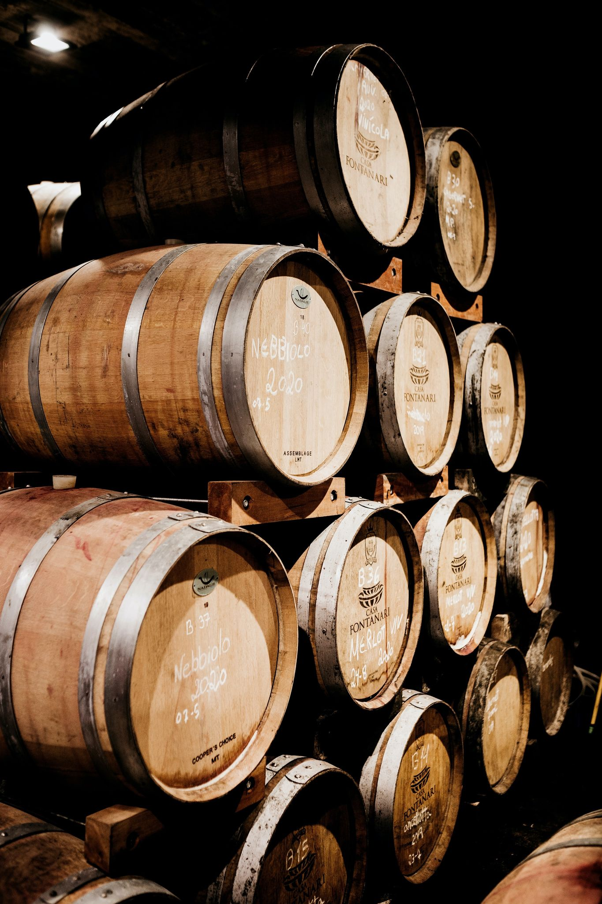

Brief history of the story WineDalat
From the late 90s and earlier, in Vietnam, there was still no
winery producing wine of international standards. With the
desire to create a wine product with its own imprint and brand
of the Vietnamese people, Lam Dong Food Joint Stock Company
(Winedalat) has researched and launched the product "Dalat
Wine" - one of the varieties. Vietnam's first wine.
At the end of 1999, the first bottles of "Dalat Wine" were officially launched in the market, and immediately received high appreciation from wine lovers.
WineDalat has made continuous efforts, continues to research, develop and improve the quality of Dalat Wine products with the support of foreign wine experts, expand the wine grape material area to create a product. Delicate and delicious wines for wine-loving consumers.
Today, millions of bottles of WineDalat's Wine are being consumed every year all over the country and especially exported to foreign markets. Dalat Wine, Chateau Dalat has affirmed its position as an international standard brand of wine and is loved by wine lovers at home and abroad, is an indispensable drink in receptions, meetings, and events. in cozy meals of friends and family.
At the end of 1999, the first bottles of "Dalat Wine" were officially launched in the market, and immediately received high appreciation from wine lovers.
WineDalat has made continuous efforts, continues to research, develop and improve the quality of Dalat Wine products with the support of foreign wine experts, expand the wine grape material area to create a product. Delicate and delicious wines for wine-loving consumers.
Today, millions of bottles of WineDalat's Wine are being consumed every year all over the country and especially exported to foreign markets. Dalat Wine, Chateau Dalat has affirmed its position as an international standard brand of wine and is loved by wine lovers at home and abroad, is an indispensable drink in receptions, meetings, and events. in cozy meals of friends and family.
